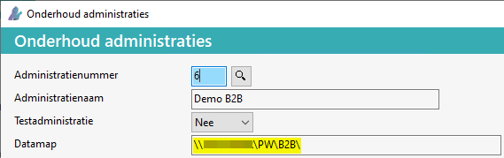
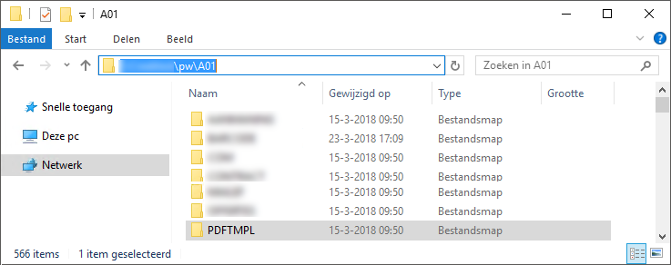
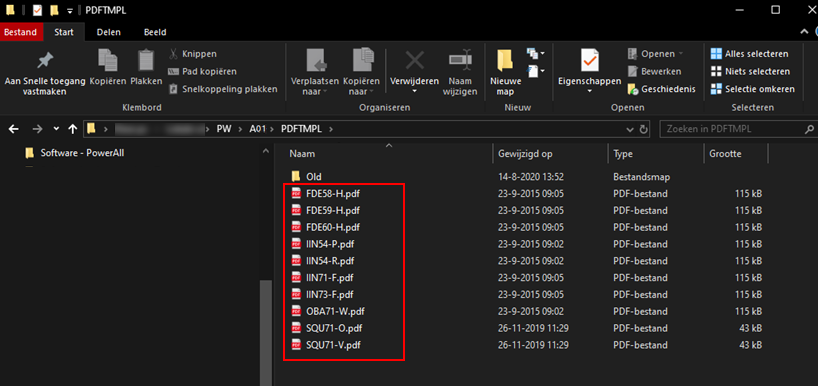

Dat gaat automatisch. Bijv. als je een E-factuur stuurt met de lay-out G dan kijkt Powerall Connect staat er in de map PDFTMPL een IIN73-G dan wordt die pdf als achtergrond gekoppeld.
- Er is dus geen koppeling ingesteld bij onderhoud lay-outs.
De PDF's die achter de facturen etc.(als achtergrond) afgedrukt worden, staan in een aparte map namelijk PDFTMPL. Deze map PDFTMPL staat in de Datamap van de betreffende administratie.
Om deze aan te passen, doorloopt u de volgende stappen:
Ga in het Systeemmenu naar Systeembeheer > Onderhoud administraties.

Tip: Kies voor de knop Wijzigen en Kopieer (via Rechtermuis > Kopiëren) de Datamap en plak deze in de verkenner.
Open de Windows verkenner (op de server of de hoofdcomputer waarop Powerall Connect geïnstalleerd is).
Ga naar de data map en open de map PDFTMPL.

Kopieer de oude pdf's naar een BACKUP map bijv. met de naam Old.
Voeg de nieuwe PDF lay-outs toe met dezelfde naam, zoals deze in de map stonden.
Bijv.

De nieuwe PDF achtergrond lay-outs zijn gekoppeld.
Dat gaat automatisch. Bijv. als je een E-factuur stuurt met de lay-out G dan kijkt Powerall Connect staat er in de map PDFTMPL een IIN73-G dan wordt die pdf als achtergrond gekoppeld.
Als er nieuw briefpapier gebruikt gaan worden, dan moet de achterliggende of achtergrond PDF's vervangen worden.
Rechts boven kan op onderstaande termen gezocht worden:
Belangrijk: De naam van de PDF bestanden moet precies hetzelfde zijn.
Copyright ©